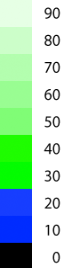
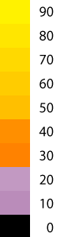
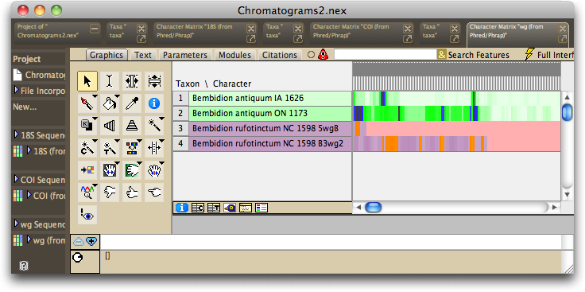
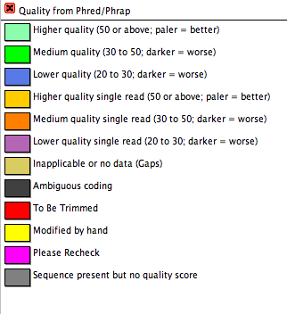

Phred and Phrap assign a quality score for each base. This quality score measures the probability of an error in the base call, with higher quality scores representing lower probabilities of errors. In particular, Phred uses the following to determine quality scores (Green, 1999):
"On the basis of the trace characteristics, phred computes a probability p of an error in the base call at each position, and converts this to a quality value q using the transformation q = -10 log_10(p). Thus a quality of 30 corresponds to an error probability of 1 / 1000, a quality of of 40 to an error probability of 1 / 10000, etc."
Phrap basis its quality score in addition on the matches between individual reads (Green, 1999).
Chromaseq reads these quality scores from the Phred and Phrap output, and stores them for each base. The quality scores are by default indicated by the color of the base both in the matrix and in the Chromatogram Viewer. For sequences based upon two or more reads, the colors vary from very pale green for high quality bases through darker green and finally to blue and black for low-quality basis. Sites with ambiguous base calls are colored grey. For sequences based upon only a single read, the colors vary from yellow and orange through purple. The colors with the quality score represented are shown below
Two or more reads  |
Single reads  |
For example, if you process the Chromatograms2 directory present in the ChromaseqExamples download (see the Tutorial for more details), the matrix presented will look like this:

The first two sequences are based upon multiple reads each, and so they are colored in greens and blues. The remaining two sequences are based upon a single read each, and so they are shown in oranges and purples; they represent the two reads from one sample that failed to contig in Phrap.
In the matrix, the legend showing the colors for quality scores can be viewed by touching on the button below the taxon names:

In addition to coloring the cells, Mesquite colors the background of the taxon name based on the average quality score for basis in the entire sequence, using the same coloring scheme as for individual bases.
References
Green, P. 1999. Phrap, version 0.990329. http://phrap.org.